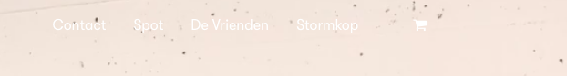
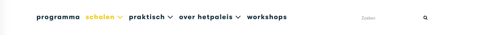
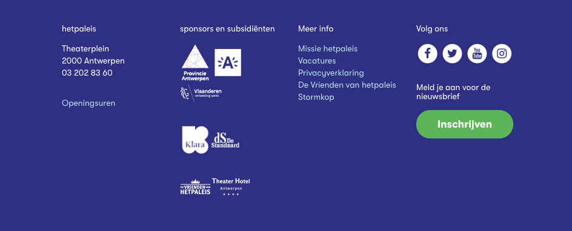
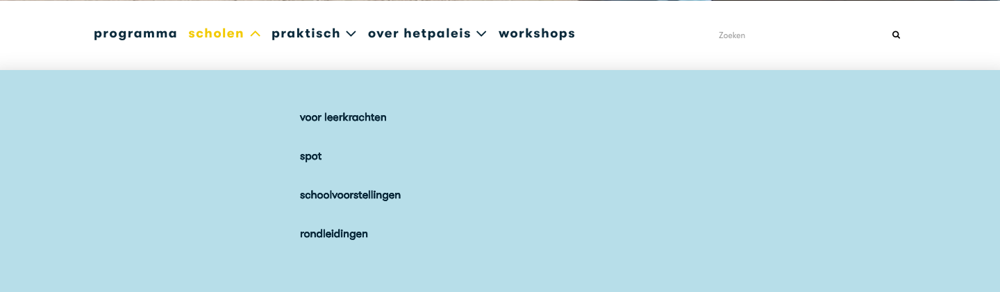
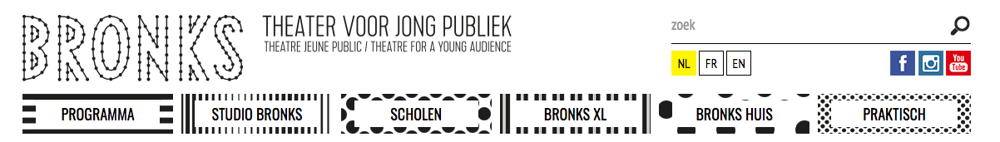

De concurrentie die ik gekozen heb voor dit project is De Kopergietery in Gent, het Paleis in Antwerpen en Bronks in Brussel.
Alle drie zijn het jeugd-en kindertheaters. Het zijn de meest gekende jeugdtheaters van België.
In elke grote stad in Vlaanderen is er wel zo'n theater te vinden. Maar in de stad waar ik woon, hebben we dit nog niet. Dit is dan ook
de reden waarvom ik gekozen heb om het in Aalst te implementeren. Bij het maken van zo'n project moet er eerst gekeken worden naar de concurrentie.
In deze concurrentieanalyse ga ik op zoek naar de slechte en goede voorbeelden die ik bij de concurrentie vind.
Ook zal ik kijken naar wat ik zelf op mijn website wil en nodig vind.
Kopergietery
Ik vind het lettertype bij deze links net iets te groot. Dit zou ik kleiner doen aangezien dit een deel is van de website waar niet iedereen naar kijkt.

Ik vind het niet logisch dat er niet op voorhand betaald moet worden.
Zo kan het zijn dat er heel veel reservaties te niet worden gedaan omdat men dan op het laatste moment dan niet komt opdagen.

De menubalk op zich vind ik heel leuk maar ik vind het moeilijk om alles terug te vinden. Misschien is het beter om niet te veel onderverdelingen
te hebben en het beperkt te houden.

Het Paleis
Ik vind de menu net iets te onleesbaar, spijtig dat dit enkel op de homepage is, want dit is de belangrijkste pagina.

Als je over de menu heen gaat, komen de opties niet naar beneden, het duurt dus heel lang tegen dat je het juiste onderdeel gevonden hebt.

Bronks
Ik heb gezocht naar dingen die ik niet goed vond aan de website van Bronks maar ik vond alles heel leuk.
Dit is een goed voorbeeld van een goede website.
Kopergietery
Ik vind het leuk dat je op de homapage direct een agenda vindt om naar een bepaalde datum te zoeken. Dit gaat heel snel en is heel handig.

Het Paleis
Deze footer vind ik heel duidelijk. Ook vind ik het idee van de nieuwsbrief leuk. Dit ga ik ook gebruiken bij mijn
website.

Ik vind het leuk dat er een pagina is speciaal voor scholen. Dit maakt duidelijk dat het een kinderen jeugd-therater is.

Bronks
Deze menu balk vind ik heel leuk. De knopjes die een leuke achtergrond hebben en bij hovering over de knopjes krijgen ze een kleurtje.
Ook het logo vind ik leuk gedaan. Het past allemaal heel goed samen.
